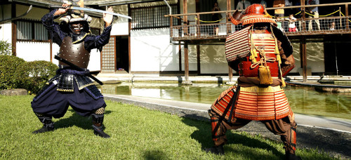
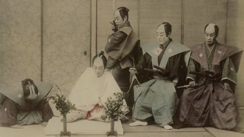
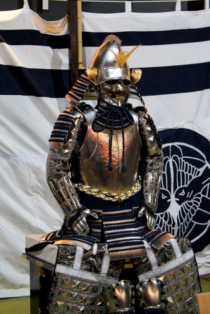

Samurai (侍, em português "servo", masculino) ou Bushi (武士 em português "guerreiro") e Onna-bugeisha (女武芸者, feminino), Inicialmente era um servidor civil do império japonês, com as funções de cobrador de impostos (coletoria) e administrador de terras (daimyō). Durante o período do Japão feudal, ganhou funções militares e virou um soldado da aristocracia imperial, no período de 930 a 1877, terminando a era como um ronin duelista (samurai desonrado) ou mestre de artes, como artesanato, pintura, ou de chá.

Samurai moderno representando o dia do samurai
24/04
- Instituto Niten
A coletoria era exercida exclusivamente pelo sexo masculino. O coletor, com porte robusto e semi-alfabetizado, cobrava impostos dos camponeses e estabelecia a ordem em caso de revolta.
Na época feudal, já com funções militares, o samurai seguia o código de honra denominado Bushidô (caminho do guerreiro, desenvolvido nos séculos IX e XII), que ensinava as principais características do samurai (semelhante ao conceito da cavalaria medieval): frugalidade, grande disciplina, lealdade, honra até a morte, habilidade com a espada katana, coragem extrema diante de qualquer situação.
Em 1185, Os samurais tornaram-se a classe dominante do Japão, com a fundação do Primeiro Xogunato (regime militar feudal Período Kamakura) pelo comandante do exército Minamoto no Yoritomo, conhecido como "Xogunato Kamakura".Mas em 1868, com a restauração Meiji, os samurais perderam o poder para o imperador e declinaram rapidamente, sendo perseguidos e exterminados nove anos depois, no fim da Rebelião Satsuma.
Um samurai não ligado a um clã ou daimyō (senhor de terras) era chamado de rōnin (traduzido do japonês significa "homem onda"). São também samurais desempregados ou que largaram a honra e não cumpriram com o ritual do seppuku (ato de repor a honra do clã ou família). Samurai ao serviço de um han (propriedade) era chamado de Hanshi (範士) (pessoa experta de alto nível, um instrutor de instrutores).
Tal relação de suserania e vassalagem era semelhante à da Europa medieval, entre os senhores feudais e seus cavaleiros. Entretanto, o que difere o samurai de outros guerreiros da antiguidade é o modo de encarar a vida e seu peculiar código de honra e ética.
Eram chamados de Ronin (浪人) os samurai desempregados, aqueles que ainda não tinham um daimyo (senhor de terras) para servir, ou quando o senhor morria, ou quando eram destituídos do cargo - princípio básico de lealdade do guia bushido. Ronin era considerado a mais profunda forma de penitência de um guerreiro, estando ele preso a uma vida desonrosa - sem um sentido para sua existência.
O código de honra
Havia uma máxima entre eles: a de que a vida é limitada, mas o nome e a honra podem durar para sempre. Assim, esses guerreiros prezavam a honra, a imagem pública e, o nome de seus ancestrais acima de tudo, até da própria vida.
A morte, para o samurai, era um meio de perpetuar a sua existência. Tal filosofia aumentava a eficiência e a não-hesitação em campos de batalha, o que veio a tornar o samurai, o mais letal de todos os guerreiros da antiguidade. Tinham frequentemente que escolher a própria morte, ao invés do fracasso. Se derrotados em batalha ou desgraçados por outra falha, a honra exigia o suicídio no ritual denominado harakiri ou seppuku (o guerreiro abria o próprio ventre com uma faca). Todavia, a morte não podia ser rápida ou indolor. O samurai fincava a sua espada pequena no lado esquerdo do abdômen, cortando a região central do corpo, e terminava por puxar a lâmina para cima, o que provocava uma morte lenta e dolorosa que podia levar horas. Apesar disso o samurai devia demonstrar total autocontrole diante das testemunhas que assistiam ao ritual.

Ritual Seppuku, restauração da honra através do suicídio
No entanto, dispunham de um assistente neste momento, que deceparia sua cabeça (decapitação) ao menor sinal de fraqueza para que sua honra fosse igualmente preservada. Um cargo considerado de grande honra, normalmente eram escolhidas pessoas próximas (familiares ou amigos) do samurai.
A morte nos campos de batalha eram acompanhada por decapitação, onde a cabeça do derrotado era um troféu; A prova de que ele realmente fora vencido. Por causa disso, alguns samurais perfumavam seus elmos com incenso antes de partirem para a guerra, para que isso agradasse o eventual vencedor. Samurais que matavam grandes generais eram recompensados pelos seus daimyo, que lhe davam terras e mais privilégios.
Os ocidentais ao tomarem conhecimento desses fatos, avaliavam os samurais apenas como guerreiros rudes e de hábitos grosseiros. Os samurai destacaram-se também pela grande variedade de habilidades que apresentaram fora de combate. Eles sabiam amar tanto as artes como a esgrima, e tinham a alfabetização como parte obrigatória do currículo. Muitos eram exímios poetas, calígrafos, pintores e escultores. Algumas formas de arte como o Ikebana (arte dos arranjos florais) e a Chanoyu (arte do chá) eram também consideradas artes marciais, pois treinavam a mente e as mãos do samurai.
O caminho espiritual também fazia parte do ideal de homem perfeito que esses guerreiros buscavam. Nessa busca os samurai descobriram o Zen-budismo, como um caminho que conduzia à calma e à harmonia.
Os samurai eram guerreiros que davam muita importância ao seu clã (família) por isso se algum membro da família do samurai morresse por assassinato ele teria que matar o assassino para assim reconquistar a honra.
Nomenclatura
O termo "samurai", traduzido do japonês significa "aquele que serve". Portanto, sua maior função era servir, com lealdade e empenho. Em troca disso recebiam privilégios, como terras e/ou pagamentos que geralmente eram efetuados em arroz, numa medida denominada koku (200 litros).
No século X, com o ganho de função militar o termo bushi (武士) foi associado ao samurai, traduzido do japonês significa "guerreiro" ou "homem de armas" que era usado durante o período Edo. Mas refere-se à "nobreza guerreira" e não "infantaria alistada". Mas ao longo do tempo, durante a era Tokugawa (Período Edo), eles perderam gradualmente a função militar.
Após tornar-se um bushi (guerreiro samurai), o cidadão e sua família ganhavam o privilégio do sobrenome. Além disso, os samurai tinham o direito (e o dever) de carregar consigo um par de espadas à cintura, denominado "daishō" (símbolo samurai). Era composto por uma espada curta (wakizashi), cuja lâmina tinha 40 cm, e uma grande (katana), com lâmina de 60 cm. Todos dominavam o manejo do arco e flechas e, alguns usavam também bastões, lanças e outras armas como a foice e corrente (kusarigama) e jutte.
História
Inicialmente, os samurais eram apenas coletores de impostos e servidores civis do império. Era preciso homens fortes e qualificados para estabelecer a ordem e muitas vezes ir contra a vontade dos camponeses.
No século VIII, iniciou a formação da casta social dos samurai, mas foi apenas no final do século XII, com o estabelecimento do Período Kamakura houve o período de sete séculos de dominação política e social samurai sobre o povo japonês, que terminou com a Restauração Meiji determinando a queda do terceiro xogunato, na segunda metade do século XIX.
No século X, foi oficializado o termo "samurai", e este ganhou uma série de novas funções, como a militar. Nessa época, qualquer cidadão podia tornar-se um samurai, bastando para isso treinar o Kobudo (arte marcial tradicional japonesa dos samurais), manter uma reputação e ser habilidoso a ponto de ser contratado por um senhor feudal. Assim foi até o xogunato dos Tokugawa, iniciado em 1603, quando a classe dos samurai passou a ser uma casta (transmissão hereditária de um estilo de vida). Assim, o título de "samurai" começou a ser passado de pai para filho. Assim, com a transmissão hereditária, começaram a ser treinados militarmente desde a infância, e formavam uma casta respeitadíssima e hereditária.
O samurai mais famoso de todos os tempos foi Miyamoto Musashi(1584—1645), um guerreiro que veio do campo, participou da batalha de Sekigahara e iniciou um longo caminho de aperfeiçoamento. Ele derrotou os Yoshioka em Edo (atual Tóquio) e venceu o combate com outro grande samurai, Sasaki Kojirō.
Pelo fim da era Tokugawa, os samurais eram burocratas aristocráticos, ao serviço dos daimiô (poderoso senhor de terras), com as suas espadas servindo para fins cerimoniais.
Em 1868, com as reformas da era Meiji, quando o imperador do Japão retomou ao poder do país, a classe dos samurai foi abolida e foi estabelecido um exército nacional ao estilo ocidental. O rígido código samurai bushido, ainda sobrevive na atual sociedade japonesa, tal como muitos outros aspectos tradicionais do modo de vida. O legado continua influenciando não apenas a sociedade japonesa, mas também o ocidente.
O Samurai na sociedade
A Sociedade Japonesa, durante o período do xogunato, abaixo dos nobres, dos senhores feudais e dos grandes líderes militares, dividia-se em 4 classes principais: samurais, lavradores, artesãos e mercadores. Os samurai, a classe dos guerreiros, que compreendia cerca de 3 a 8 por cento do total da população, destacava-se como casta por poder portar armas legalmente, as quais eram proibidas às outras pessoas; a eles, samurai, quais cabiam a responsabilidade de manter a ordem.
Os samurai tinham privilégios, como o livre direito de ação; diante deles, em certas ocasiões, as pessoas das classes mais baixas deviam lhes reverenciar, como ato de respeito. Por lei, um direito chamado kirisute gomen dava a um samurai o poder de eliminar com sua espada qualquer um das castas mais baixas que não o respeitasse. Os samurais, como casta, terminaram com a extinção do feudalismo.
Sem ter a quem servir, entraram na luta contra o império, numa série de revoltas iniciadas em 1870, que foram abafadas pelo exército imperial. Os sobreviventes das revoltas, homens com séculos de orgulho, honra e cultura guerreira, se degradaram e terminaram seus dias como bandoleiros ou mendigos.
Casamento samurai
Geralmente o casamento era arranjado pelos pais, com o consentimento silencioso dos jovens. Mas, também não se descartava a hipótese dos próprios jovens arrumarem seus pretendentes. Na maioria dos casos segundo os velhos costumes, as preliminares eram confiadas a um (uma) intermediário(a).
Nas famílias dos samurais, a monogamia tornou-se regra, mas no caso de esterilidade da mulher, o marido tinha o direito de possuir uma "segunda esposa" (como na aristocracia), pertencente à mesma classe ou de casta inferior.
Mas depois no século XV, esse costume acabou, no caso do casal não ter filhos e assim sendo não possuir herdeiros, recorria-se ao processo de 'yôshi' (adoção) de um parente ou de um genro.
Como norma geral o casamento constituía assunto estritamente familiar e se realizava dentro dos limites de uma mesma classe.
Contudo, os interesses políticos às vezes rompiam as barreiras dos laços familiares, transformando o matrimônio em assunto de estado.
Na aristocracia existiu um famoso ocorrido, o caso da família Fujiwara que, a fim de manter a hegemonia da família nas altas posições junto da corte, casou suas filhas com herdeiros do trono e outros membros da família imperial.
De modo semelhante, os chefes de clãs samurais promoviam políticas de alianças por meio de casamento, dando suas filhas em matrimônio a senhores vizinhos ou outras pessoas influentes.
Onna-bugeisha, a mulher samurai
Existiam mulheres daimyos também, porém não era algo comum, mulheres generais comandante de tropas e guerreiras eram conhecidas como Onna-Bugeisha. Tomoe Gozené a guerreira mais conhecida do Japão, temida devido a demostração de força e coragem na Guerras Genpei.
Na classe samurai, a mulher ocupava uma posição importante na família. Quase sempre dispunha do controle total das finanças familiares, comandando os criados e cuidando da educação dos filhos e filhas (sob orientação do marido).
Comandavam também a cozinha e a costura de todos os membros da família. Tinham a importante missão de incutir na mente das crianças (meninos e meninas), os ideais da classe samurai que eram: não ter medo diante da morte; piedade filial; obediência e lealdade absoluta ao senhor; e também os princípios fundamentais do budismo e confucionismo.
Com todas essas responsabilidades, a vida de esposa de um samurai não era nada invejável. Com muita frequência, o samurai estava ausente prestando serviço militar ao seu senhor; e em tempo de guerra o samurai às vezes era forçado a defender seu lar, pois conforme os reveses da batalha poderiam virar alvo de ataques inimigos.
Nessas ocasiões de perigo para a família, não era difícil a mulher combater ao lado do marido, usando de preferência a 'naginata' (alabarda), arma que aprendiam a manejar desde cedo.
Mesmo não tendo o refinamento das damas da nobreza, pela qual os samurais nutriam certo desprezo, a mulher samurai possuía conhecimentos dos clássicos chineses e sabia compor versos na língua de Yamato, ou seja, no japonês puro, usando 'kana'.
Existiam mulheres daimyos e líderes de seus respectivos clãs, as dificuldades em períodos de guerras fizeram muitas mulheres irem às batalhas. Muitas mulheres foram as últimas sobreviventes da sua família ou clã, quando elas eram poupadas da morte pelo inimigo elas eram forçadas a entrarem em convento para se tornarem freiras budistas.
As crônicas de guerra, como o Azuma Kagami, contam-nos que esposas e filhas de samurais lutavam na defesa de seus lares, empunhando alabarda, atirando com arco ou até acompanhando seus maridos nos campos de batalha. Essas mulheres demonstravam muita coragem ao enfrentarem o perigo sem medo.
Sem perder a feminilidade essas esposas, cuidavam de sua aparência vestiam-se com esmero; gostavam de manter a pele clara, usando batom e pintando os dentes de preto (tingir os dentes de preto era hábito de toda mulher casada), tiravam a sobrancelha e cuidavam com muito carinho dos longos cabelos escuros.
Samurais estrangeiros
Várias pessoas nascidas em países estrangeiros receberam o título de samurai.
Depois de Bunroku e Keichō no eki, muitas pessoas nascidas na dinastia Joseon foram trazidas para o Japão como prisioneiros ou cooperadores. Alguns deles serviram daimyōs como retentores. Uma das figuras mais proeminentes entre eles foi Kim Yeocheol, que recebeu o nome japonês de Wakita Naokata e foi promovido a comissário da cidade de Kanazawa.
O marinheiro e aventureiro inglês William Adams(1564–1620) foi um dos primeiros ocidentais a receber a dignidade de samurai. O shōgun Tokugawa Ieyasu presenteou-o com duas espadas representando a autoridade de um samurai e decretou que William Adams, o marinheiro, estava morto e que Anjin Miura (三浦按針), um samurai, nascera. Adams também recebeu o título de hatamoto (vassalo), uma posição de alto prestígio como retentor direto na corte do shōgun. Recebeu generosas receitas: “Pelos serviços que tenho prestado e faço diariamente, estando a serviço do Imperador, o Imperador tem-me dado a vida”. (Cartas) [quem?] Ele recebeu um feudo em Hemi (逸見) dentro dos limites da atual cidade Yokosuka, "com oitenta ou noventa lavradores, que são meus escravos ou servos". (Cartas) Sua propriedade foi avaliada em 250 koku. Ele finalmente escreveu "Deus providenciou para mim depois de minha grande miséria" (Cartas), Com o que ele se referia à viagem cheia de desastres que inicialmente o trouxe ao Japão.
Jan Joosten van Lodensteijn, um colega holandês de Adams em sua malfadada viagem ao Japão no navio De Liefde, também recebeu privilégios semelhantes de Tokugawa Ieyasu. Joosten também se tornou um samurai hatamoto[3] e recebeu uma residência no castelo de Ieyasu em Edo. Hoje, esta área na saída leste da Estação de Tóquio é conhecida como Yaesu (八重洲). Yaesu é uma corruptela do nome japonês do holandês, Yayousu (耶楊子). Joosten recebeu um navio com o selo vermelho (朱印船), permitindo-lhe negociar entre o Japão e a Indochina. Em uma viagem de volta de Batávia, Joosten se afogou depois que seu navio encalhou.
Yasuke (弥助) foi um lacaio de Oda Nobunaga originalmente de Moçambique Português, África. Portador da arma de Nobunaga. Ele serviu no incidente de Honnō-ji. De acordo com African Samurai de Thomas Lockley no 'clã vassalo Oda, o Maeda [arquivos]', foi mencionado que ele recebeu 'um estipêndio, uma residência privada ... e recebeu uma espada curta com uma bainha decorativa.'
O missionário jesuíta italiano Giuseppe Chiara entrou no Japão numa época em que o cristianismo era estritamente proibido na tentativa de localizar o padre Cristóvão Ferreira, que havia apostatado sua fé cristã nas mãos de tortura pelas autoridades japonesas em 1633. Di Chiara também foi torturado e eventualmente também se tornou um apóstata. Após a rebelião de Shimabara em 1638, ele chegou à ilha de Oshima e foi imediatamente preso em junho de 1643. Mais tarde, ele se casou com uma mulher japonesa, assumindo o nome e o status de samurai de seu falecido marido, Okamoto San'emon (japonês: 岡本 三 右衛門), e viveu no Japão até sua morte em 1685, aos 83 anos de idade.
Existem descendentes de samurais em países estrangeiros. Como 650 pessoas com o sobrenome Japón na cidade espanhola de Coria del Río (2003). Eles são descendentes do primeiro enviado oficial japonês à Espanha, que incluiu Hasekura Tsunenaga por volta de 1614-1616.
Arte Samurai
Os samurai prezavam particularmente o treinamento militar. Através das artes marciais, era fortalecida tanto a sua técnica quanto o seu espírito. Mais do que acertar um alvo com sua flecha ou cortar algo com sua espada, um samurai sempre visava refinar seu espírito, com a autodisciplina e o autocontrole, para assim estar sempre preparado para as situações mais adversas possíveis.
Tal preocupação com o espírito que ajudou as artes samurai a se salvar de sua extinção na Restauração Meiji (época em que os samurais viraram burocratas a serviço do governo). O Koryū (ou Kobudo), como são conhecidos os estilos de combate criados pelos samurai ainda é praticado atualmente. Envolve uma grande gama de armas diferente e técnicas, como o Kenjutsu (combater com espadas), Iaijutsu (desembainhar a espada em combate), Naginatajutsu (luta com alabarda), Sōjutsu ou Yarijutsu (arte da lança), Jojutsu e Bōjutsu (arte do bastão).
A maioria destas artes tiveram versões modernizadas (Gendai budō) no século XX, como por exemplo: Kendō, Karatê, Iaidō, Jōdō, Aikido, Judô. Tanto o Kobudo como o Gendai Budo e Hapkido são praticados hoje em dia, muitas vezes se complementando
Armadura

Réplica da armadura do Daimyo Uesugi Kenshin (1530-1578)
Uma armadura típica dos samurai era composta por diversos detalhes importantes, sofrendo mudanças de acordo com o período histórico, o clã e a classe do samurai. As usadas para batalhas a cavalos, chegavam a pesar até quarenta quilos.
Suneate: Duas lâminas verticais presas na tíbia por juntas ou correntes.
Haidate: Protetor de coxas, com a parte inferior sobreposta de lâminas de metal ou couro.
Yugate: Luvas feitas de couro.
Kotê: São as mangas que protegiam os antebraços e punhos, poderiam ser feitas de diversos materiais, como tecido, couro ou lâminas de metal.
Dô: Protetor para o abdômen.
Kusazuri: Um tipo de saia feita de lâminas de metal presas a um cinto de couro e amarradas no Dô, servia para proteger o quadril e as coxas.
Uwa-obi: Cinto feito de linho e algodão que amarrava o Dô.
Sode: Protetor de ombros feito de lâminas de metal.
Hoate: Máscara que variavam muito de modelo, conforme o período.
Kabuto: Capacete, que também variavam muito de modelo, conforme o período. Simbolizavam o poder e status do samurai.
Horo: Capa, feita de seda utilizada como aparador de flechas, também levava consigo o desenho do clã o qual o samurai participava.
O Dia do Samurai
Em julho de 2005, a Câmara Municipal de São Paulo aprovou um projeto de lei, que estabelece o dia 24 de abril de cada ano como data comemorativa do Dia do Samurai.
A data foi escolhida pelo autor do projeto, o então vereador William Woo, em homenagem ao aniversário do Sensei Jorge Kishikawa, a título de reconhecimento por seu trabalho na difusão das artes samurais tradicionais (Kobudo ou Koryu Budo) no Brasil.
A comemoração do Dia do Samurai foi posteriormente proposta e oficializada em várias outras cidades e também estados do território brasileiro. Atualmente a data é parte do calendário oficial das cidades de São Paulo (a metrópole onde se concentra o maior número de descendentes japoneses fora do Japão), Ribeirão Preto (cidade considerada como o berço da imigração japonesa no Brasil), Brasília, Piracicaba, Campinas e Guarulhos e nos estados do Amazonas, Paraná e Santa Catarina.